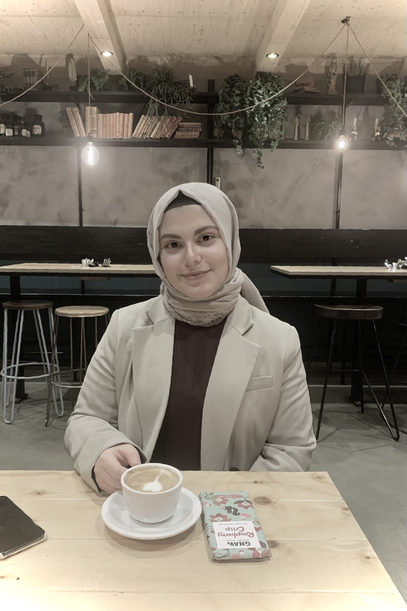

Ikbal Gundogdu

Summary
Detail-oriented and analytical aspiring web developer.
Education
-
Bachelor of Science, Computer Science - Stockholm University (2020-2024)
Work Experience
-
Customer Support Representative - Mentimeter
10/2022 - 02/2024
- Assisting in troubleshooting and debugging technical issues
- Collaborating with other teams
-
Engage with customers to understand their needs and provide guidance
on products
-
Collaborate with customers while addressing inquiries promptly and
effectively
- Administrative tasks
Skills
Volunteer Experience
- 2017 ENSEC conference
Gave a speech about experiences of being a young immigrant in the 6th ENSEC
conference in Stockholm
Interests